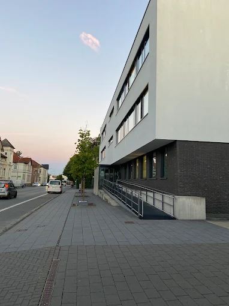
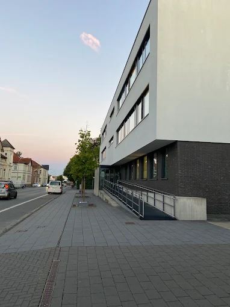

Produkte und Diensleistungen der OWL IT
Hier geht es um die Produkte und Dienstleistungen, die das Unternehmen "OWL IT (Ostwestfalen-Lippe IT) herstellt bzw. erbringt. Nach diesen habe ich gründlich recherchiert und jetzt kann ich sagen, ich will die euch vorstellen. Wie ihr bereits gedacht habt, ist die Firma ein Softwareentwickler und bietet moderne und cloudbasierte Lösungen an. Das heißt, sind ihre Produkte größtenteils von IT-Anwendungen geprägt.
 

Schulbewerbung
schulbewerbung.de ist das Portal, um sich neu an einer Schule zu bewerben oder die Schule zu wechseln.
Ehrenamtskarte
Mit der Ehrenamtskarten-App können Sie als ehrenamtlich tätige Person eine Ehrenamtskarte bei Ihrer zuständigen Stelle beantragen und jederzeit die zahlreichen Vergünstigungen von öffentlichen, gemeinnützigen und auch privaten Anbietern durch Lokalisierung des eigenen Standortes mobil abrufen. Zudem erhalten Sie interessante und hilfreiche Neuigkeiten rund um das Thema Ehrenamt. Diese App ist geeignet für Smartphone und Tablet.
ULA App
Die UnterlagenApp – kurz „Ula“ – ist eine App der Ostwestfalen-Lippe-IT (ehemals krz) und soll die papierlose Kommunikation zwischen Bürger und Behörde ermöglichen. Der App-Nutzer kann Dokumente abfotografieren oder bestehende Dokumente hochladen. Durch den Einsatz eines QR-Codes als Ausgangspunkt wird dem Nutzer die Möglichkeit geboten, die zukünftige Kommunikation digital über die App durchzuführen – von jedem Ort, zu jeder Zeit.
.png)
Zählerstände
Die Anwendung Zählerstände Online ermöglicht es Bürgerinnen und Bürgern, ihre aktuellen Strom-, Gas- oder Wasserzählerstände einfach und sicher online an die Stadtwerke zu übermitteln. Über eine intuitive Eingabemaske können die Werte schnell erfasst, bei Bedarf mit einem Foto des Zählers ergänzt und direkt digital übermittelt werden. Dies spart Zeit, reduziert Fehler und vereinfacht die jährliche Verbrauchserfassung für alle Beteiligten.